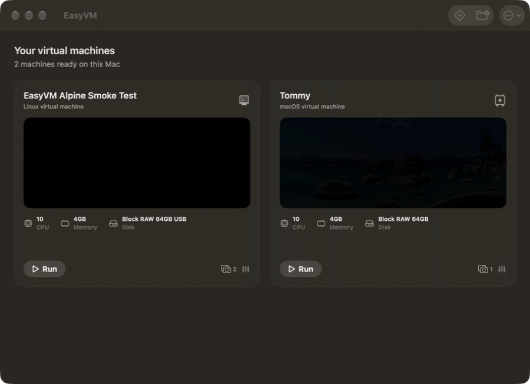

Stable first
Creation, boot, stop, recovery, and configuration integrity come before an expanding feature list.
Native on Apple silicon
Create and run macOS and ARM64 Linux VMs with a focused SwiftUI app built on Apple's Virtualization framework.
Homebrew: brew install --cask everettjf/tap/easyvm
Open source · Signed and notarized · macOS 13+ · Apple silicon

A deliberately smaller VM app
Creation, boot, stop, recovery, and configuration integrity come before an expanding feature list.
EasyVM embraces Apple silicon and Apple's virtualization stack instead of bundling a universal emulator.
The future is a small, safe automation surface for disposable VMs—not an AI chat box inside every screen.
The refresh
EasyVM started in 2022. The refresh keeps its simplicity while adding the engineering foundations expected from a dependable modern macOS app.
Current Xcode, compatibility matrix, CI, and repeatable smoke tests.
Typed errors, configuration migrations, atomic storage, cancellation, and diagnostics.
Tests, signing, notarization, GitHub Releases, Homebrew Cask, accessibility, and honest support policy.
A thin CLI and, later, a local MCP interface backed by the same tested VM core.
Help shape EasyVM